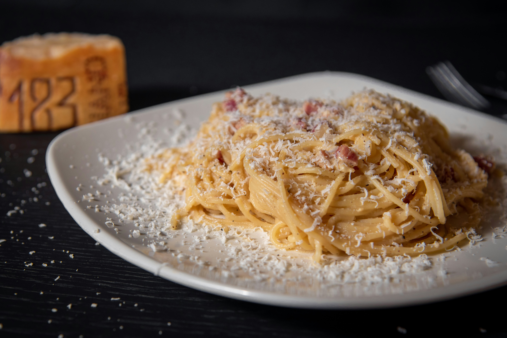
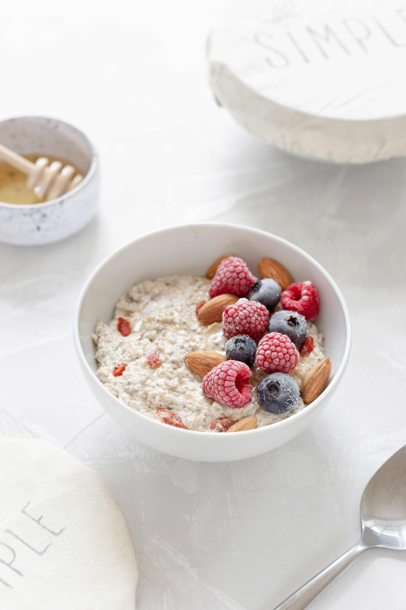

Filete a la Parrilla
Jugoso filete de res a la parrilla con papas rústicas y salsa de pimienta.
Jugoso filete de res a la parrilla con papas rústicas y salsa de pimienta.

Clásica carbonara italiana con panceta crujiente, huevo y parmesano fresco.

El postre italiano más famoso: capas de bizcocho, café y crema de mascarpone.